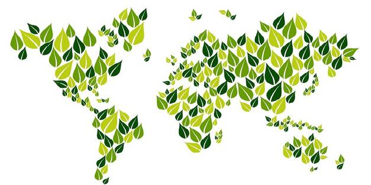
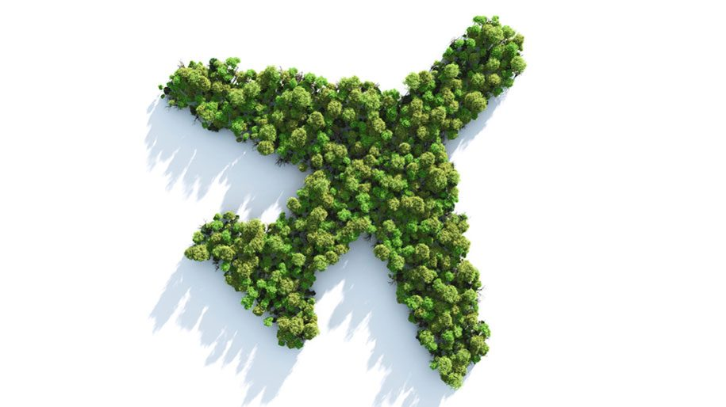
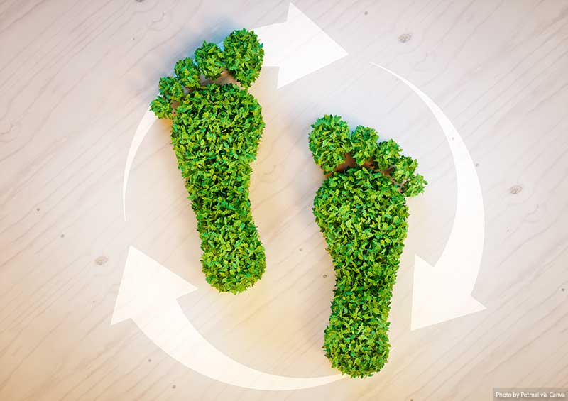
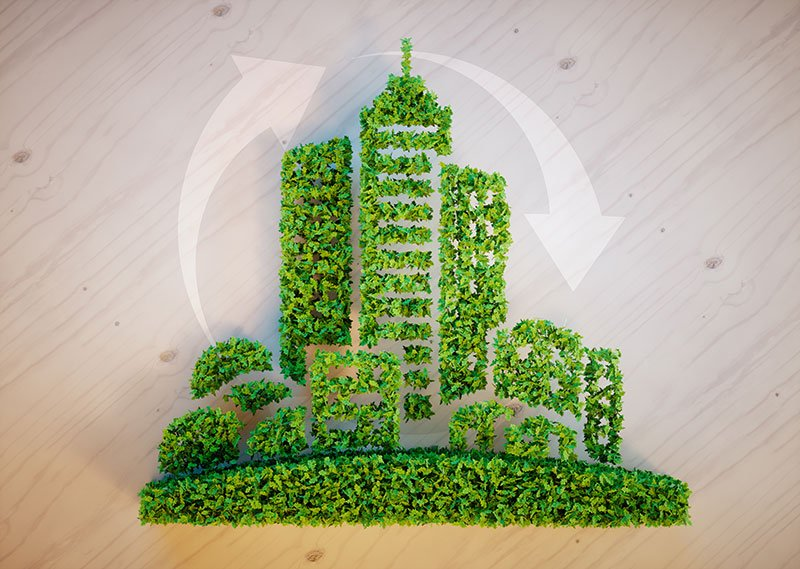

<p>blog works!</p>

<!--  -->
<!--  -->


<div id="carouselExampleIndicators" class="container carousel slide" data-bs-ride="carousel">
    <div class="carousel-indicators">
        <button type="button" data-bs-target="#carouselExampleIndicators" data-bs-slide-to="0" class="active" aria-current="true" aria-label="Slide 1"></button>
        <button type="button" data-bs-target="#carouselExampleIndicators" data-bs-slide-to="1" aria-label="Slide 2"></button>
        <button type="button" data-bs-target="#carouselExampleIndicators" data-bs-slide-to="2" aria-label="Slide 3"></button>
    </div>
    <div class="carousel-inner">
        <div class="carousel-item active">
            
            <p><strong>Best green travel possibilites</strong></p>
        </div>
        <div class="carousel-item">
            
            <p><strong>Best hiking places</strong></p>
        </div>
        <div class="carousel-item">
            
            <p><strong>Best green cities to vist</strong></p>
        </div>
    </div>
    <button class="carousel-control-prev" type="button" data-bs-target="#carouselExampleIndicators" data-bs-slide="prev">
      <span class="carousel-control-prev-icon" aria-hidden="true"></span>
      <span class="visually-hidden">Previous</span>
    </button>
    <button class="carousel-control-next" type="button" data-bs-target="#carouselExampleIndicators" data-bs-slide="next">
      <span class="carousel-control-next-icon" aria-hidden="true"></span>
      <span class="visually-hidden">Next</span>
    </button>
</div>